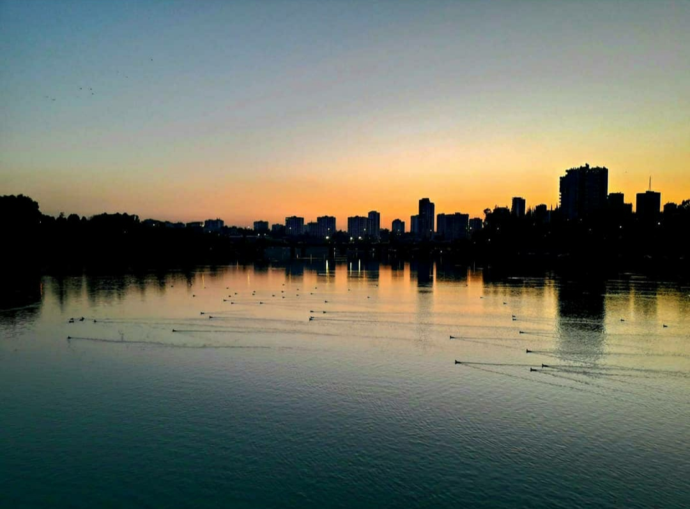

Seher Bayar
Hello World!
I am Seher. I am 24 years old. I was born in Hatay, Turkey. I got my first university education
on teaching. Then i decided that wasn't what represented me and gave myself a second chance. Now
i am a web designer. I found myself here and i love this job. I am always excited to discover
and learn new things every day.
Capturing moments has always been there in one way or another. I still find my self with a camera in my hand. I want to tell stories through photography and film. Stories that somehow reflect my love for beauty, freedom and nature, my interest in humans and world culture. I love nature, being in nature and natural beauty and I like to reflect that in my work. My will to work for the peace of our planet and its children.